How to run one thawing cycle: start it, watch it, and stop it when the fish leaves the room.
01The buttons
The panel has 3 buttons. Pick the one that matches what you want.
Fish is in. Thaw it now.STARTThe room goes straight to Stage 2.
Fish is in. Thaw it later.D-STARTThe room waits in Stage 1, then starts Stage 2 at the set time.
Fish is leaving, or something is wrong.STOPEverything turns off. STOP always works.
Drawing of the panel. Your cabinet can look different; the names on the buttons are the same.
The SCADA and the web page have the same three commands. A command from any of them does the same thing as the button.
Don't press START or D-START when a stage light is on. The room is already running. Press STOP first if you really need a new cycle.
After a power cut the room comes back in the same stage. You don't need to press anything.
02The lights
One light on = the stage the room is in. Tap a pattern to see it on the panel.
03The 3 stages
The room moves forward by itself. Only Stage 3 needs you: press STOP at the end.
1
WaitDelayed start
Fans cycle
Air off
Sprinkler
Goes to Stage 2 at the set time.
2
ThawActive thaw
Fans cycle
Air in
Sprinkler
Goes to Stage 3 when both fish probes reach their target.
3
HoldFish is ready
Fans cycle
Air off
Sprinkler
Never ends by itself. Press STOP when the fish leaves.
Probe
Where it is
Used for
Ta
Room air
Air control in Stage 2
Ts
Under a fish plate (surface)
Ending Stage 2
Tc
Pushed into a fish (core)
Ending Stage 2
Don't take the Tc probe out of the fish during a cycle. Stage 2 could end too early or never end.
The fans run forward, pause, run in reverse, pause, and repeat. The sprinkler only flushes blood off the carts: it does not thaw the fish.
04Start now
Load the fish and close the doorPut the Tc probe into a fish. Check that the Ts probe is under a plate.
Check: all lights offIf lights are blinking, the room is in maintenance. See Problems.
Press StartLight 2 turns on. Fans start after a 5-second safety delay.
Or from the web page
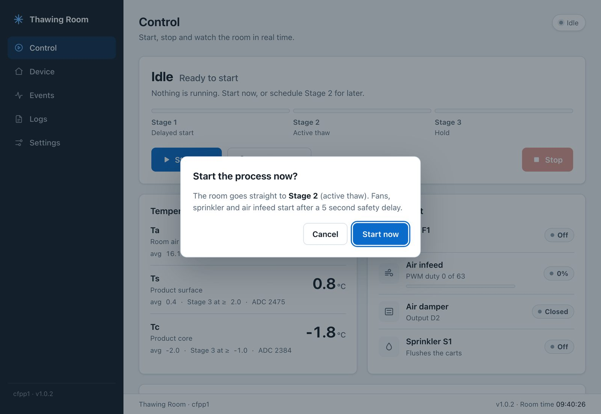
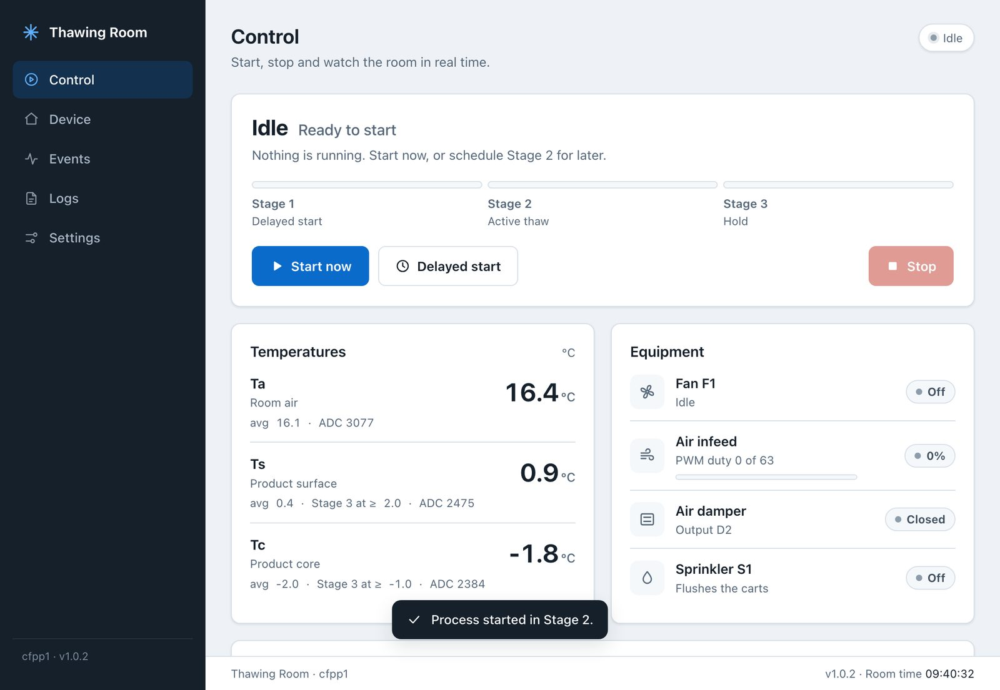
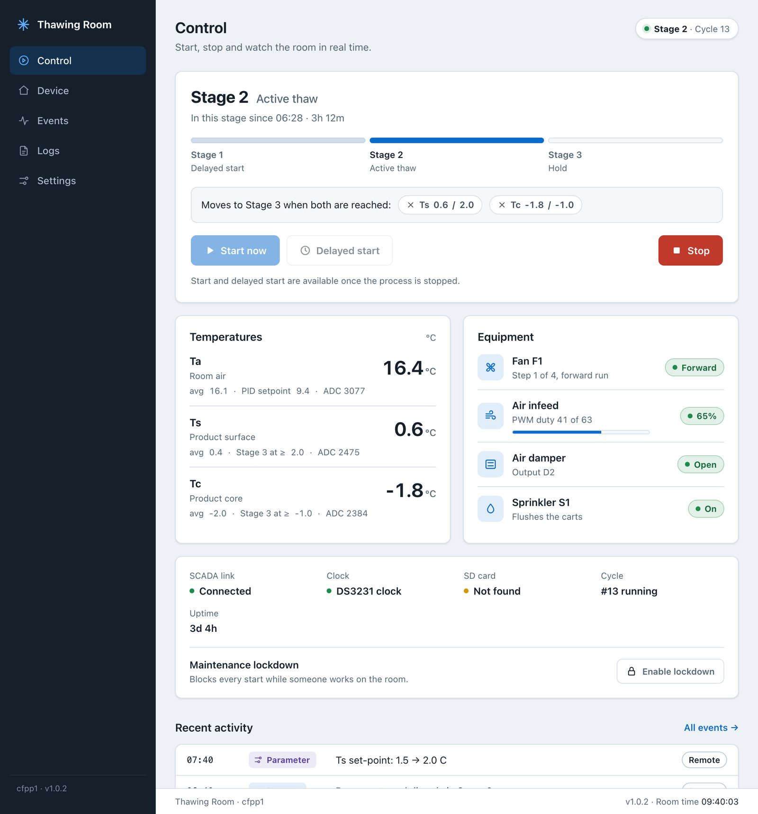
05Delayed start
Use it when the fish must be ready at a set time, for example the next morning.
Set the Stage 2 time firstIn the SCADA, or on the web page (it asks you for the time).
Press D-StartLight 1 turns on. The room waits.
At the set time, light 2 turns on by itselfNothing to press.
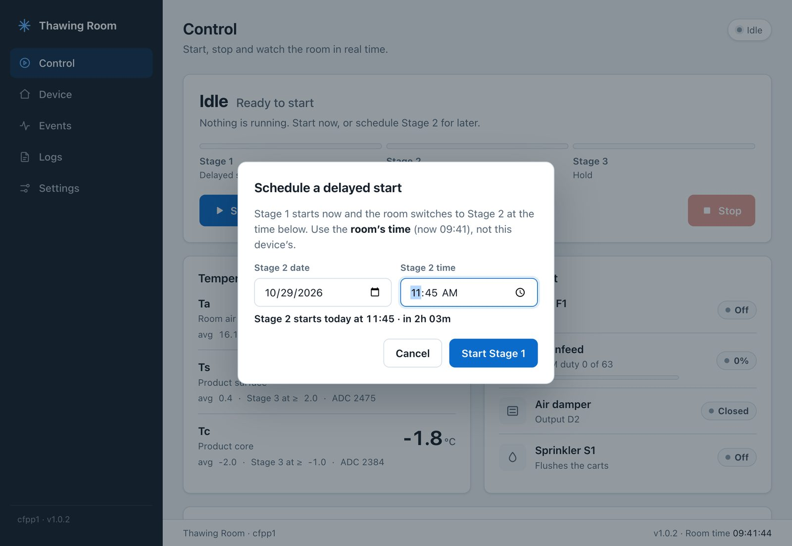
On the web page, pick the date and time. It shows when Stage 2 will start and how long until then.
Don't use the time on your own phone. Use the room time, shown at the bottom of the web page. The plant and the office can be in different time zones.
The time must be in the next 7 days.
06Stop or finish
It is the same STOP button. What it means depends on the stage.
In Stage 3: FinishedThis is the normal end. Press STOP when the fish leaves the room. The cycle is saved as finished.
In Stage 1 or 2: Stopped earlyThe cycle is saved as stopped. It can't continue: a new START begins a new cycle.
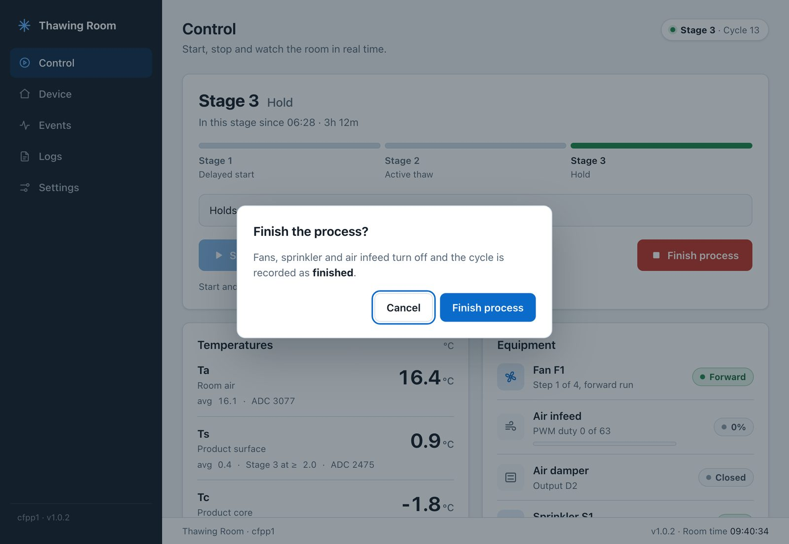
On the web page, the button says Finish process in Stage 3 and Stop in other stages. It always asks first.
07Watch on a phone
Open the room's page in any browser on the plant Wi-Fi: http://room address/control
12345678
1Now: stage and cycle number.
2Stage and how long it has been running.
3What Stage 2 waits for. ✕ not yet, ✓ reached.
4Start now · Delayed start · Stop. Grey = not possible now.
5Temperatures Ta, Ts, Tc. Red number = probe problem.
6Equipment: fan direction, air %, damper, sprinkler.
7Connection to the SCADA, clock, SD card.
8Recent activity: last things that happened.
The page updates by itself every 2 seconds. No need to refresh.
Each room has its own address and needs a user name and password. Ask your supervisor and write them on the cheat sheet.
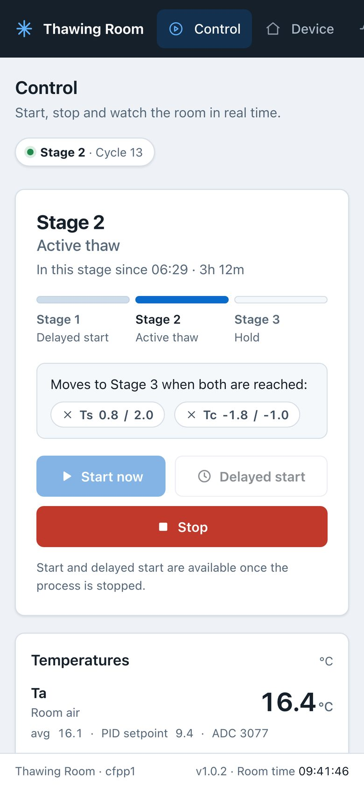
08What happened?
The Events page keeps every start, stage change and stop, with the time and who did it.
ManualA button on the panel
RemoteThe SCADA
WebThe web page
AutoThe room decided (time or temperature)
SystemStart-up or self-check
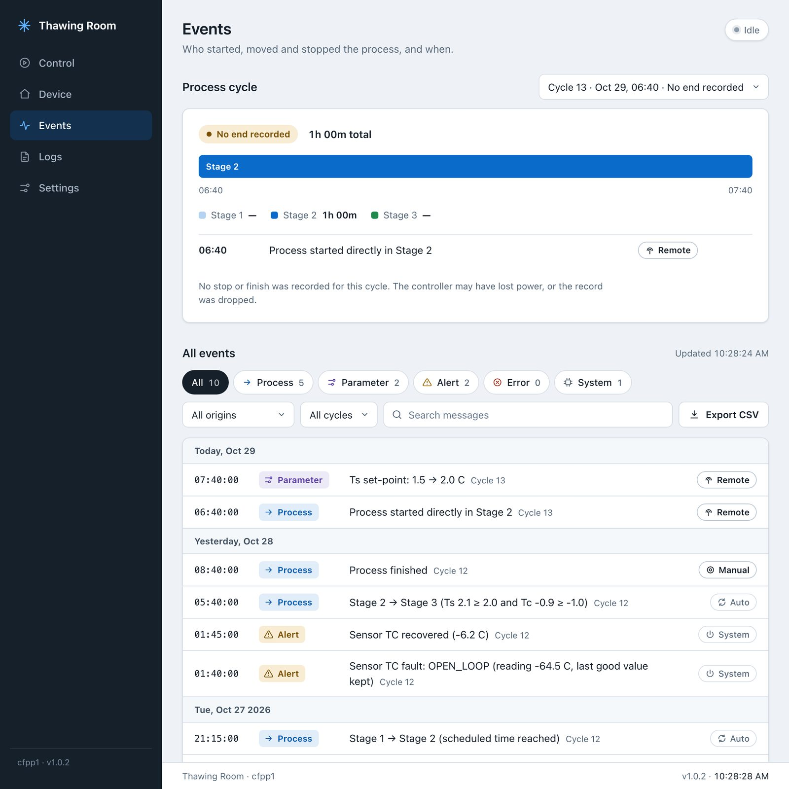
Top: the cycle as a bar, one color per stage. Below: every event, newest first. Filter by type or search.
09Problems
All 3 lights blinking
Someone is fixing the room. START and D-START do nothing.
Ask the supervisor if the work is done. Only they can end it.
START does nothing
Is a stage light on? The room is already running.
Are all lights blinking? Maintenance, see above.
Still nothing: call the supervisor.
A temperature is red
That probe gives a wrong reading. The room keeps running with the last good value.
Check the probe cable and that Tc is still in the fish.
Tell the supervisor. Stage 2 may not end by itself.
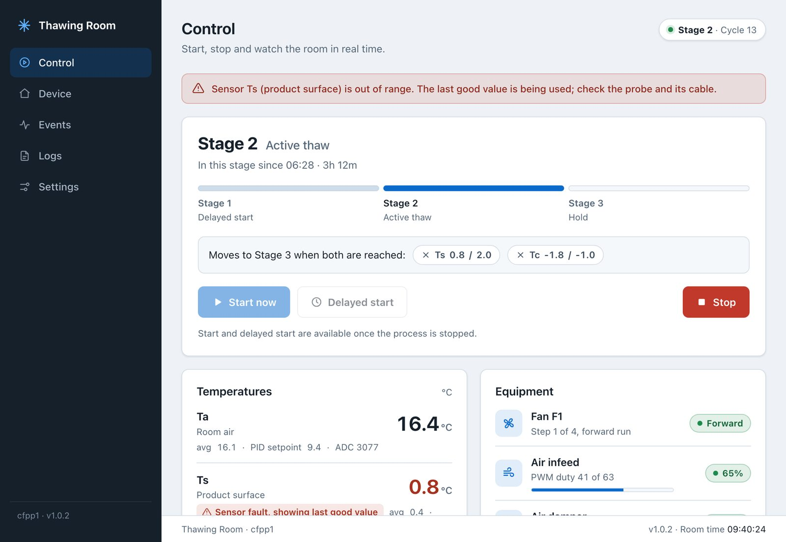
A probe problem: a red message at the top and the value in red.
Stage 2 takes too long
On the web page, look at the ✕ / ✓ boxes: Stage 2 needs both Ts and Tc.
A value that never moves can be a bad probe. Call the supervisor.
Web page says “Offline”
The room still works. Only the page lost contact.
Check your phone is on the plant Wi-Fi. The page retries by itself.
After a power cut
The room comes back in the same stage. Don't press START again.
Check that the right light is on.
10Cheat sheet
Thawing RoomRoom: · Page: http:///control
Buttons
StartThaw now (Stage 2)
D-StartThaw later (Stage 1, then 2)
StopStage 3: finished · else: stopped
Lights
Idle, ready
Stage 1, waiting
Stage 2, thawing
Stage 3, press STOP when fish leaves
Maintenance, no start
Remember
Tc probe inside a fish
Power cut: it continues by itself
Red temperature: call supervisor
From here on
Supervisor only
Lockdown, calibration and settings change how the room runs. Operators don't need these pages.
11Maintenance lockdown
Turn it on before anyone works inside the room or the cabinet. Nobody can start a cycle until you turn it off.
While it is on
START and D-START
Blocked from the panel, the SCADA and the web. Each try is written in Events.
STOP
Still works.
Stage lights
All 3 blink.
Power cut or restart
Stays on.
A cycle already running
Keeps running. Press STOP if the work needs the room off.
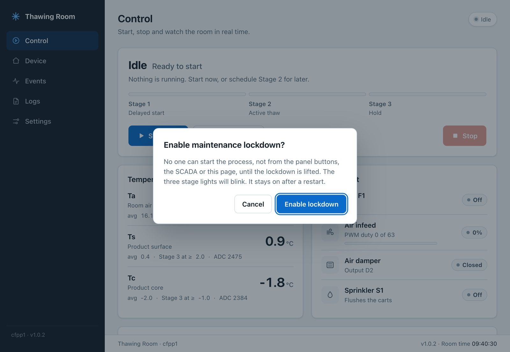
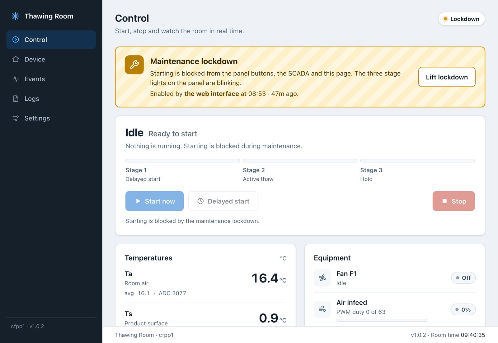
From the SCADA: publish 1 or 0 to the room's maintenance topic. The room answers on maintenance_state.
12Sensor calibration
Corrects a probe against a thermometer you trust. Three baths, about 30 minutes per probe.
Stop the cycle and turn on the lockdownCalibration only works in maintenance lockdown with the room idle.
Open Settings → Sensor calibrationPress Calibrate next to the probe.
Prepare 3 baths at least 5 °C apartGood choices: ice water (0 °C, the most important), a cold bath near −18 °C, water at room temperature.
For each bath: probe and thermometer together, wait for “Stable”Type what the thermometer reads and press Capture point.
Check the review and saveThe new calibration works right away. Undo last brings the old one back.
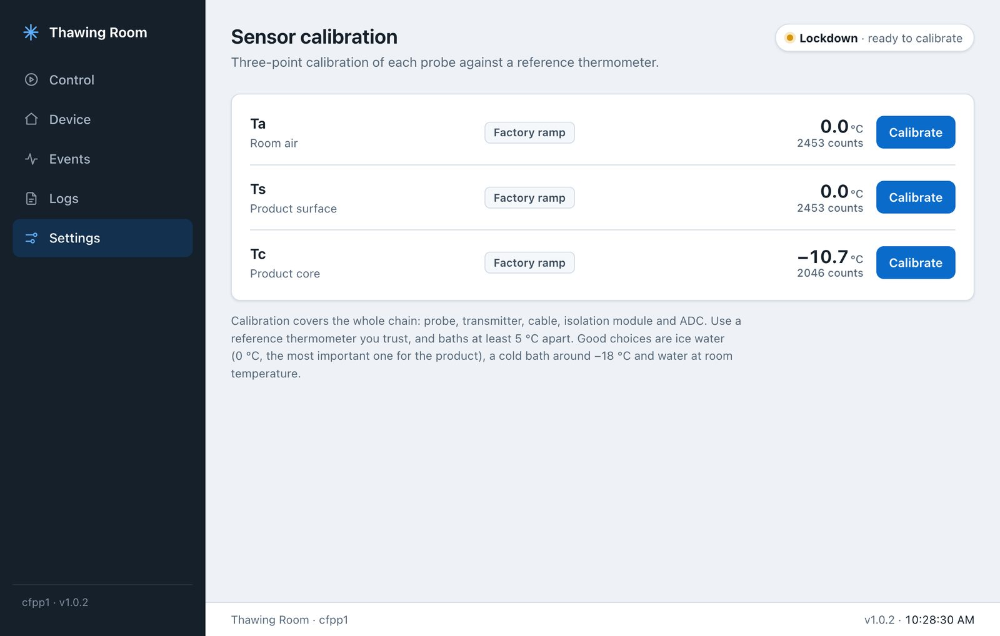
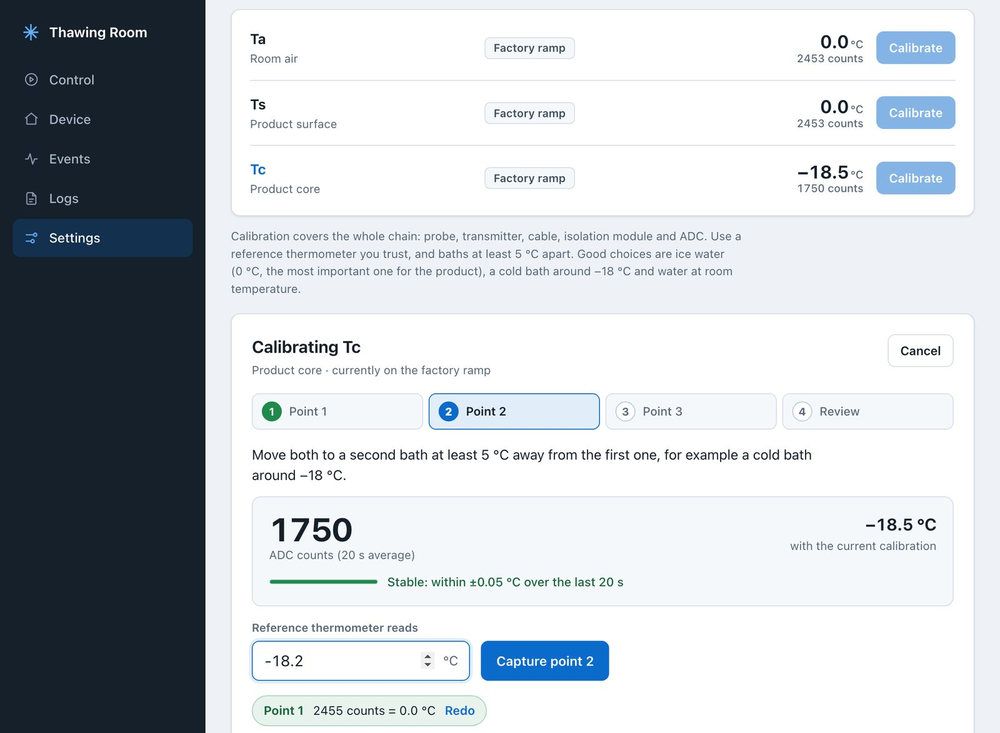
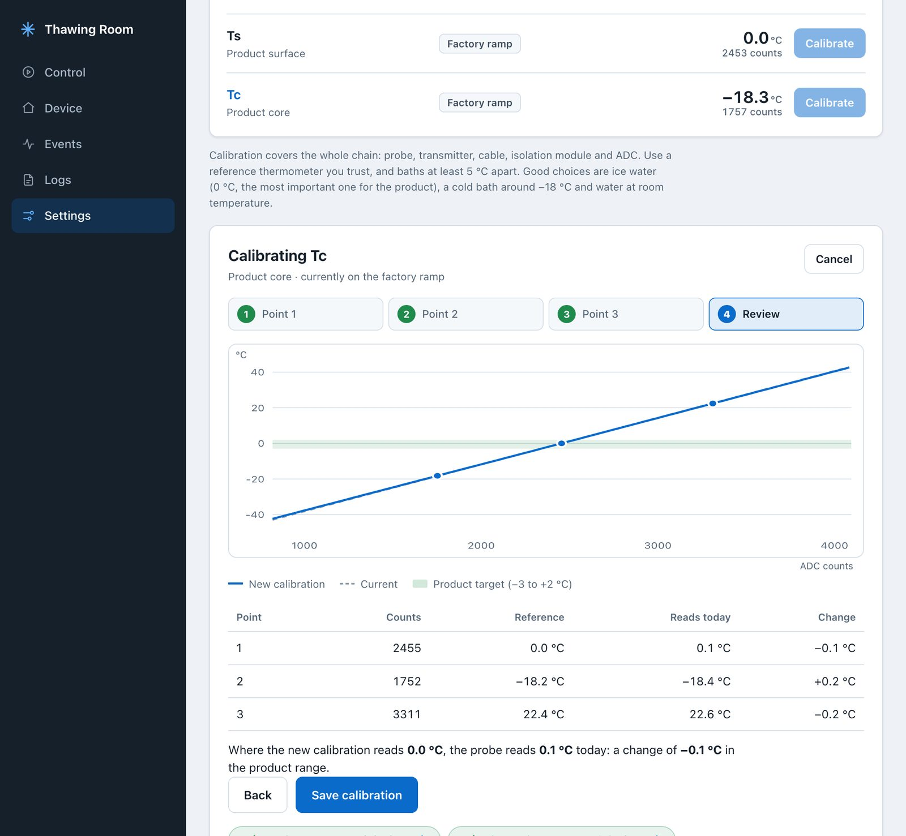
Don't calibrate with the probe in the air or still warm from your hand. Both must sit in the bath, at the same depth, until the page says Stable.
Calibration covers the whole chain: probe, transmitter, cable and the input module. That module ages, so recheck once a year or after replacing a probe.
13Settings & restart
Stage times and targets are in Settings → Thawing parameters. Network and SCADA settings are in System settings.
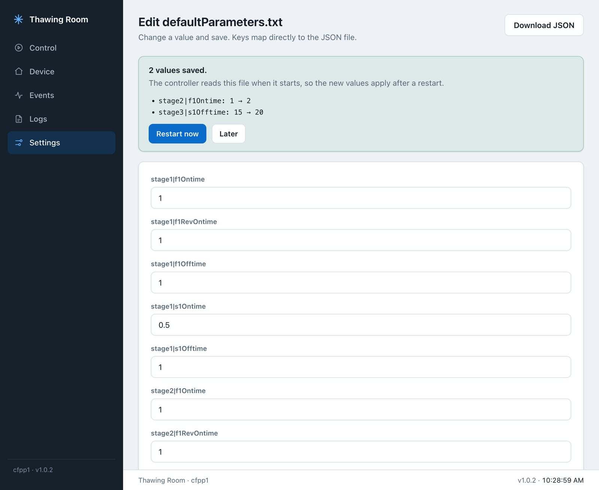
After saving, the page lists exactly what changed. Edited fields are marked until you save.
These files are read when the controller starts. Saved values apply after a restart: press Restart now, or let it happen at the next power cycle.
A restart during a cycle is safe: the room comes back in the same stage. The page waits and says Back online.
Don't change Wi-Fi or the IP address unless you are at the plant. A typo can make the room unreachable from the office.
14Firmware update
Open the Device pageChoose the .bin file under Firmware update.
Press Update firmware and waitThe bar fills, the room restarts, and the page says Back online on the new firmware.
Check the versionBottom-left of every page, for example cfpp1 · v1.0.2.
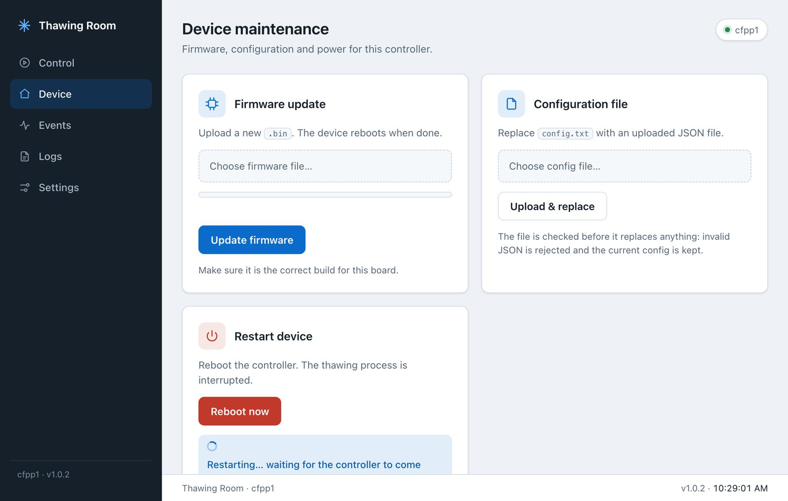
One firmware file serves all 9 rooms. Each room keeps its own settings and calibration.
Don't update during a cycle you can't afford to pause. The room resumes after the restart, but it is off for about a minute.